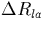
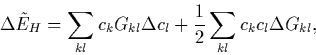

Now the electronic system is self-consistent it is possible to evaluate the forces on the atoms in order to optimise the structure.
The forces are determined from the gradient of the free energy, F determined above, with respect to displacement,
| (42) |
These forces can be determined analytically by considering the change in each term in the total energy for a displacement of . Thus
where

These are rearranged and substitutions made to eliminate and , leaving terms in only and . contains terms in and which can be determined from Equations 3.2.23 and 3.2.27. Although Tij and Sij only depend on Rla through the basis functions, , the pseudopotential term is also dependent on Rla due to ; this is determined by integrating by parts to replace with terms in :
The forces are relatively quick to evaluate compared to determination of the self-consistent energy.